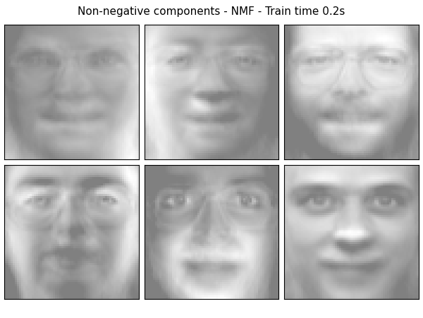
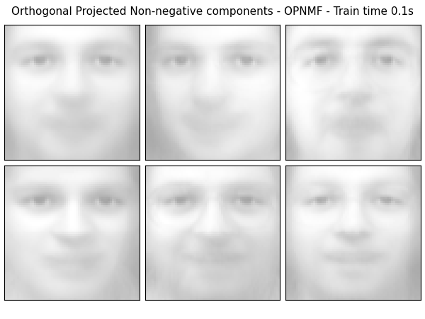

Note
Click here to download the full example code
Faces Decomposition¶
Implemented based on scikit-learn’s decomposition example.
Authors: Federico Raimondo, Vlad Niculae, Alexandre Gramfort
License: BSD 3 clause

- 
- 
Out:
Dataset consists of 400 faces
Extracting the top 6 Non-negative components - NMF...
done in 0.219s
Extracting the top 6 Orthogonal Projected Non-negative components - OPNMF...
2021-09-02 13:05:21,694 INFO Initializing using nndsvd
2021-09-02 13:05:21,754 INFO iter=0 diff=0.9636634588241577, obj=155.62796020507812
2021-09-02 13:05:21,801 INFO Converged in 80 iterations
done in 0.113s
import logging
from time import time
from numpy.random import RandomState
import matplotlib.pyplot as plt
from sklearn.datasets import fetch_olivetti_faces
from sklearn import decomposition
from opnmf import OPNMF
# Display progress logs on stdout
logging.basicConfig(level=logging.INFO,
format='%(asctime)s %(levelname)s %(message)s')
n_row, n_col = 2, 3
n_components = n_row * n_col
image_shape = (64, 64)
rng = RandomState(0)
# #############################################################################
# Load faces data
faces, _ = fetch_olivetti_faces(return_X_y=True, shuffle=True,
random_state=rng)
n_samples, n_features = faces.shape
# global centering
faces_centered = faces - faces.mean(axis=0)
# local centering
faces_centered -= faces_centered.mean(axis=1).reshape(n_samples, -1)
print("Dataset consists of %d faces" % n_samples)
def plot_gallery(title, images, n_col=n_col, n_row=n_row, cmap=plt.cm.gray):
plt.figure(figsize=(2. * n_col, 2.26 * n_row))
plt.suptitle(title, size=11)
for i, comp in enumerate(images):
plt.subplot(n_row, n_col, i + 1)
vmax = max(comp.max(), -comp.min())
plt.imshow(comp.reshape(image_shape), cmap=cmap,
interpolation='nearest',
vmin=-vmax, vmax=vmax)
plt.xticks(())
plt.yticks(())
plt.subplots_adjust(0.01, 0.05, 0.99, 0.93, 0.04, 0.)
# #############################################################################
# List of the different estimators, whether to center and transpose the
# problem, and whether the transformer uses the clustering API.
estimators = [
('Non-negative components - NMF',
decomposition.NMF(n_components=n_components, init='nndsvda', tol=5e-3),
False),
('Orthogonal Projected Non-negative components - OPNMF',
OPNMF(n_components=n_components, init='nndsvd', tol=5e-3),
False),
]
plot_gallery("First centered Olivetti faces", faces_centered[:n_components])
# #############################################################################
# Do the estimation and plot it
for name, estimator, center in estimators:
print("Extracting the top %d %s..." % (n_components, name))
t0 = time()
data = faces
if center:
data = faces_centered
estimator.fit(data)
train_time = (time() - t0)
print("done in %0.3fs" % train_time)
if hasattr(estimator, 'cluster_centers_'):
components_ = estimator.cluster_centers_
else:
components_ = estimator.components_
# Plot an image representing the pixelwise variance provided by the
# estimator e.g its noise_variance_ attribute. The Eigenfaces estimator,
# via the PCA decomposition, also provides a scalar noise_variance_
# (the mean of pixelwise variance) that cannot be displayed as an image
# so we skip it.
if (hasattr(estimator, 'noise_variance_') and
estimator.noise_variance_.ndim > 0): # Skip the Eigenfaces case
plot_gallery("Pixelwise variance",
estimator.noise_variance_.reshape(1, -1), n_col=1,
n_row=1)
plot_gallery('%s - Train time %.1fs' % (name, train_time),
components_[:n_components])
plt.show()
Total running time of the script: ( 0 minutes 1.014 seconds)